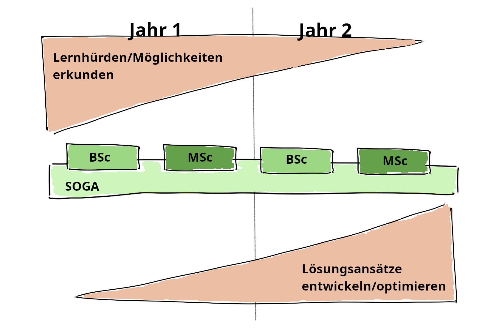
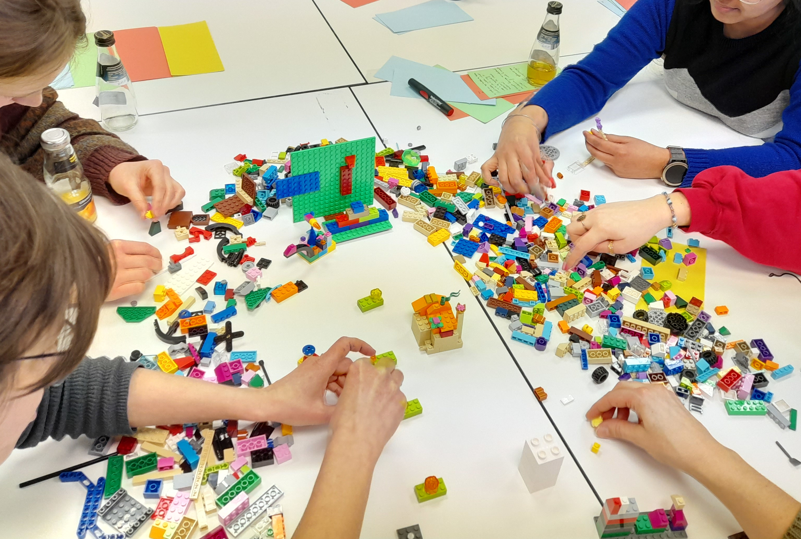

Umsetzung: Wie wir arbeiten
Unsere Arbeitsweise basiert auf Ko-Kreativität und Partizipation: Ein Fachwissenschaftler und eine Hochschuldidaktikerin arbeiten mit Studierenden als gleichberechtigten Partner:innen zusammen – ganz im Sinne von „Students as Partners“ [@weimann-sandig:2023].
Ansätze
Dabei orientieren wir uns auch an Ansätzen wie [Design-Based Research](https://de.wikipedia.org/wiki/Gestaltungsorientierte_Forschung) und [Decoding the Disciplines](https://de.wikipedia.org/wiki/Decoding_the_Disciplines), die uns helfen, systematisch und evidenzbasiert Lösungen zu entwickeln.
- Students as Partners bedeutet für uns: Studierende sind nicht nur Lernende, sondern Mitgestalter:innen ihrer Lehre. Sie bringen ihre Perspektiven ein – etwa durch Feedback, kreative Workshops oder die Mitentwicklung von Materialien.
- Design-Based Research ermöglicht es uns, praktische Lösungen direkt in der Lehrveranstaltung zu erproben und kontinuierlich zu verbessern (Reinmann u. a. 2024).
- Decoding the Disciplines hilft uns, fachspezifische Lernhürden zu identifizieren – etwa indem wir fragen: Wo scheitern Studierende typischerweise bei der Interpretation von p-Werten oder der Anwendung statistischer Tests?
Unser eklektisches Vorgehen (Zierer 2009) kombiniert diese Ansätze flexibel, um die besten Methoden für unsere Ziele einzusetzen.
Projekt-Karte
Bei einer Projektlaufzeit von zwei Jahren fokussieren wir uns im ersten Jahr auf das Erkunden von Lernhürden und Möglichkeiten für die anschließende Gestaltung der Navigationshilfen im zweiten Jahr.

Schritt 1: Lernhürden erkunden
Gemeinsam erkunden wir zunächst die Lernhürden der Studierenden – etwa durch Online-Umfragen, Teaching Analysis Polls (TAP) oder quasi-ethnografische Beobachtungen in den Lehrveranstaltungen. Im Sinne von Decoding the Disciplines fragen wir gezielt: Welche Denk- und Handlungsweisen der Statistik sind für Studierende besonders schwer zugänglich? Die gesammelten Daten analysieren wir systematisch, um Muster und wiederkehrende Hürden zu identifizieren.
Schritt 2: ‚Gelände‘ kartieren
Anschließend kartieren wir das ‚Gelände‘: Was müssen die Studierenden können, um die Statistik zu meistern? Welche Inhalte stellen besonders große Hürden dar? In welchen Situationen erscheinen die Studierenden überfordert? Was hilft ihnen beim Lernen? Welche Tools und Ressourcen nutzen sie außerhalb der Lehrveranstaltung – und warum? Mit welchen Bildern und Metaphern beschreiben sie selbst die ‚Landschaft Statistik‘?
Schritt 4: Erproben, reflektieren, verbessern
Unser Prozess ist zyklisch und reflexiv – ein Kernmerkmal von Design-Based Research: Wir erproben neue Materialien direkt in den Lehrveranstaltungen, evaluieren ihre Wirkung durch Feedback und Beobachtungen und verbessern sie kontinuierlich.
Ko-kreativ zusammenarbeiten

Werkzeuge wie Lego® Serious Play® helfen uns, kreative Ideen zu entwickeln und Studierende aktiv einzubinden. Zum Beispiel bauen wir gemeinsam 3D-Modelle der ‚Landschaft Statistik‘, um Lernhürden sichtbar zu machen oder Lösungsansätze zu skizzieren.
So entsteht eine dynamische Lehr-Lern-Kultur, in der alle Beteiligten – Lehrende wie Lernende – gemeinsam wachsen. Am Ende soll eine Statistik-Lehre entstehen, die nicht nur Wissen vermittelt, sondern auch Neugier weckt, Selbstvertrauen stärkt und dauerhaft im Gedächtnis bleibt – weil sie auf den echten Bedürfnissen und Perspektiven der Studierenden aufbaut.